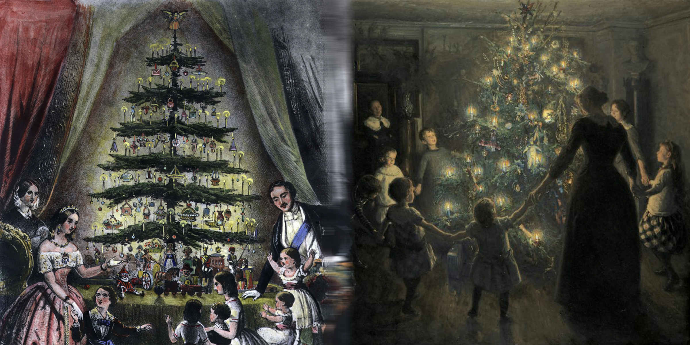
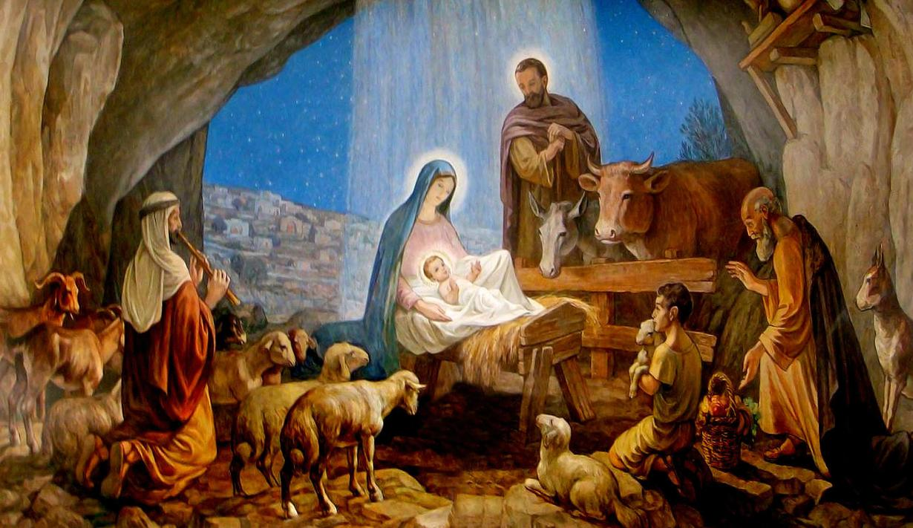

การเฉลิมฉลองแห่งความสุข ความรัก และแสงสว่าง
คริสต์มาสเป็นเทศกาลสำคัญที่เฉลิมฉลองการประสูติของพระเยซูคริสต์ ซึ่งตรงกับวันที่ 25 ธันวาคมของทุกปี เป็นเวลาที่ผู้คนมักรวมตัวกันในครอบครัว ประดับตกแต่งบ้านด้วยต้นคริสต์มาส ไฟประดับ และของขวัญ นอกจากนี้ยังมีการจัดพิธีทางศาสนา เช่น การไปโบสถ์หรือร้องเพลงสรรเสริญ บางประเทศมีตัวละครเช่นซานตาคลอสที่มอบของขวัญให้เด็ก ๆ เทศกาลนี้ไม่เพียงเฉลิมฉลองในกลุ่มคริสเตียน แต่ยังเป็นโอกาสแห่งความสุข ความเมตตา และการแบ่งปันในหลายวัฒนธรรมทั่วโลก
การประสูติของพระเยซูเกิดขึ้นที่เมืองเบธเลเฮม พระแม่มารี ผู้ได้รับการแจ้งจากทูตสวรรค์กาเบรียลว่าจะให้กำเนิดพระบุตรของพระเจ้า ได้เดินทางพร้อมโยเซฟมายังเมืองนี้ แต่ไม่มีที่พัก ทั้งสองจึงพักในคอกสัตว์ และพระเยซูประสูติในที่นั้น ถูกวางในรางหญ้า การประสูติครั้งนี้เป็นสัญญาณแห่งความรอดและการสมปรารถนาของคำพยากรณ์ ทูตสวรรค์แจ้งข่าวแก่คนเลี้ยงแกะ และดวงดาวนำเหล่านักปราชญ์มาสักการะพระองค์ด้วยของขวัญ สะท้อนถึงความเรียบง่ายและความเมตตาของพระผู้ไถ่
ธรรมเนียมปัจจุบันของเทศกาลคริสต์มาสมักเกี่ยวข้องกับการเฉลิมฉลองร่วมกันในครอบครัว การประดับต้นคริสต์มาส ไฟประดับ และมอบของขวัญเป็นสัญลักษณ์ของการแบ่งปันและความรัก หลายคนเข้าร่วมพิธีทางศาสนา เช่น การไปโบสถ์หรือร้องเพลงคริสต์มาส ในบางวัฒนธรรม ซานตาคลอสหรือบุคคลที่คล้ายคลึงกันจะมอบของขวัญให้เด็ก ๆ นอกจากนี้ยังมีอาหารพิเศษ เช่น ไก่งวง ขนมปังขิง และพุดดิ้งคริสต์มาส เทศกาลนี้ไม่ได้จำกัดเฉพาะชาวคริสต์ แต่ยังเป็นช่วงเวลาแห่งความสุขและความปรองดองในสังคมทั่วโลก